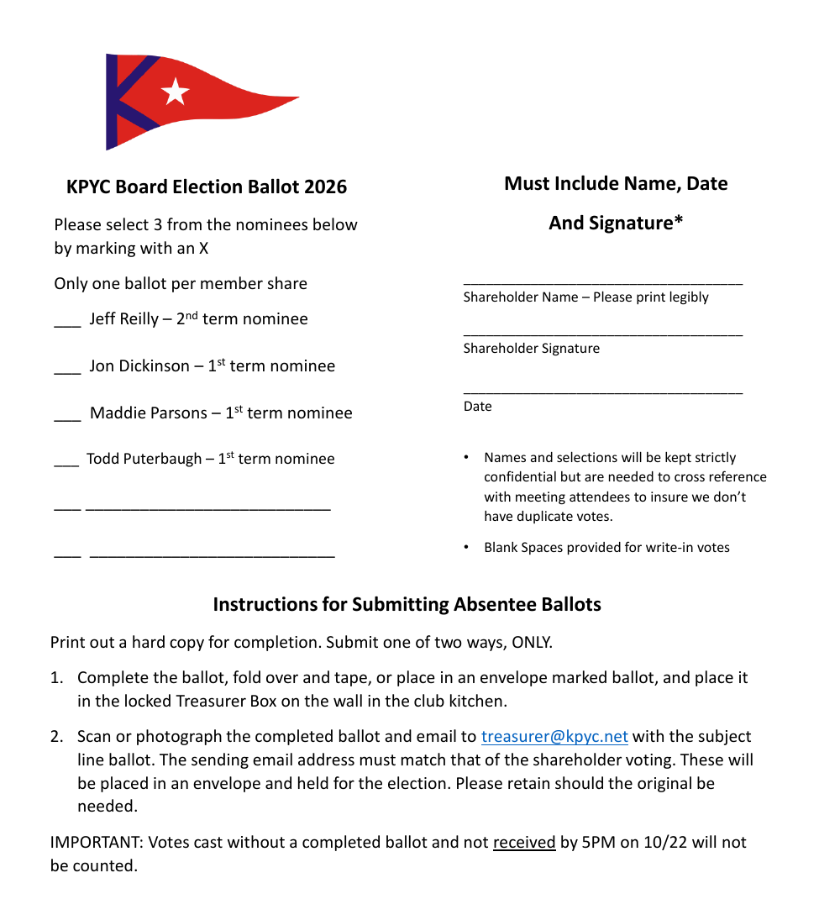

Print a hard copy and complete it by hand. Select 3 nominees by marking an X, and include your name, signature and date. One ballot per member share. Names and selections are kept strictly confidential and are used only to cross-check against meeting attendees to prevent duplicate votes.

Select a name to read the statement.
My name is Jeff Reilly, and I am seeking a second term on the Kittery Point Yacht Club board. I bring a lifetime of boating experience and a deep commitment to the club community.
I grew up in Traverse City, Michigan, where my summers were spent on Traverse Bay, the Straits of Mackinac, and Ontario's North Channel. Those early trips led to a family voyage from Traverse City to Georgetown, Bahamas, and back. After moving to New Hampshire, I earned a degree in Computer Information Systems and Business Administration at Plymouth State University and sailed with the university's Sailing Club, racing in collegiate events across New England. Today I can often be found on my Ranger Tug, exploring the waters around New Castle and Portsmouth with friends.
As a sitting board member, I have led the evaluation and setup of ClubExpress as the club's new web platform and club management system, approved by the board on September 9. After the July website outage, I built and have maintained an interim site to keep KPYC reachable. The new platform is designed to be run by club volunteers: shared administrator access, a documented handover process, and committee chairs who control their own pages. A preview is planned for the next member meeting, with a target launch before the end of the year. A second term lets me carry the rollout through, including dues, event registration, and member records in one place. I also prepare the board meeting minutes and the monthly financial statement synopsis for board review.
Beyond KPYC, I served on New Castle's Capital Improvement Committee, recommending short-term and long-term town spending. At the New Castle Congregational Church I started as technology lead, handling the website and email, and now also manage the church's Wi-Fi network and phone systems. There I also began as assistant treasurer and have been a member of the Audit committee for several years, where I both perform and lead the committee's work. I am a regular presence at club events and am always ready to lend a hand. I would be glad to continue serving the members of Kittery Point Yacht Club.
Jeff
I have been a member of KPYC since 2020. My wife Joanie, our son Drew, and our daughter Georgia moved to Portsmouth in 2007 and live on the Sagamore Creek. I grew up sailing on Lake Geneva, Wisconsin, alongside sailors who competed in the Olympics and the America’s Cup. I am the president and owner of Enliven Data Solutions, a company that provides publishers, media organizations, advertising agencies, and brands with advertising technology and data analytics services.
KPYC is a remarkable community filled with kind, generous, and fun people. It has been a wonderful place to make new friends. Whether at cookouts, parties, football gatherings, cornhole on the deck, or cocktails at sunset, there is always a touch of magic.
Over the past four years, I have attended most board meetings to better understand how the club operates. I appreciate the dedication of both the current and past board members and am eager to contribute my time and energy to continue their work in keeping KPYC a well-run, vibrant, and welcoming place.
This winter I led the team to repaint the clubhouse. It was a great experience working with other members.
A few things that I’d like to do with the board
Thank you for your consideration. Jon
Hi, for those of you who don’t know me, my name is Madeline Parsons, though I usually go by Maddie. My husband and I became members of Kittery Point Yacht Club in 2023. Although we are still relatively new members, we spent many years before joining attending KPYC events, racing on Tuesdays and Thursdays with PSA, and spending plenty of time on the Piscataqua in general.
My background in yacht clubs comes largely from my time at Portsmouth Yacht Club, where I basically grew up professionally. I started as a dockhand, worked my way up to Dockmaster, and eventually became the club’s Steward and General Manager. During my time there, I was involved in everything from member relations and events to staffing, day-to-day operations, and the many small details that go into creating a club experience members are proud to be part of. That experience taught me a lot about membership, hospitality, community, and what makes a yacht club feel like more than just a place to keep a boat. In many ways, my time at Portsmouth Yacht Club was one of the biggest reasons I wanted to become a member at Kittery Point.
Since then, my career has continued to center around hospitality, travel, sales, and working with people, but I’ve always appreciated the sense of community that comes with being part of a yacht club.
I’m really excited about the future of Kittery Point Yacht Club and the opportunity to become more involved. I would love to bring my previous club experience, a fresh perspective, and a willingness to jump in wherever needed, while also learning from the members and leadership who know and love the club so well.
Hello. I’m Todd Puterbaugh and I am running for the board this year.
Some biographical info: I and my wife Honey have been members since 2019. In recent years, I have been active with the Sustainability Committee and the Social Committee. Honey and I are also active sailors, day-sailing and coastal cruising on our C&C 30 sailboat Catherine. I have also crewed on a few PSA race boats.
I am seeking a position on the board to further my contributions to the club. This club has become a very important part of my life. The property and facilities are gorgeous. The opportunities to swap stories and knowledge with fellow sailors makes me a better sailor. And, most importantly, the memories and friendships formed here will last a lifetime.
Over the years, I have been a member and have held leadership positions in several non-profit member-run organizations. It has given me good experience on what makes these organizations successful and what causes issues. Two of the most crucial factors, which are related, are member involvement and sustainability/succession planning.
Member-run organizations like this one are most vibrant and successful when each member thinks and acts not just as a “user” but also as a part-owner, which is, of course, literally the case for this club.
Closely related to being active owner/members, is understanding what ownership entails. Knowledge and documentation of critical items such as the functioning, maintenance, and security of the physical property, member recruitment, and finances need to be continuously updated, widely known, and easily available to all members. I have seen organizations where the critical knowledge ends up being known to only a few key members. And if the club loses those key members, the tribal knowledge is lost and critical functions can suffer.
If elected to the board, I will focus on these two fundamental areas. I will work to continue and expand the club’s strong tradition and sense of active membership/ownership. I will work to ensure that knowledge of how the club operates continues to be well-documented and easily accessed so that all members have the ability to more easily step into critical roles and contribute to these club operations.